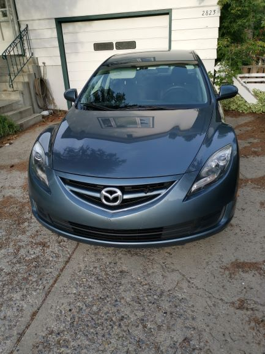

Why do I love Subaru?
- Symmetrical all wheel drive
- The best system at its price range
- I've seen a lot of them perform amazing in snow
- There are total four different types: reference video link
- Boxer engine
- low central gravity & great visibility
- Rally blood (Oh yes STI)
- Safety features (Eyesight)
What am I currently dirving?
I am driving a 2012 Mazda 6 with a 2.5 liter engine, not fast but enough for daily

What cars am I willing to buy in the future?
- WRX: fun enough and also better than STI to drive in city
- Crosstrek: capable of taking me to anywhere that people normally would go under different weathers
- Forester, Outback, Honda Passport, ... are also great for adventuring